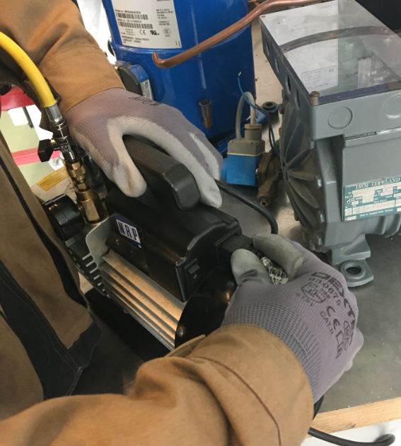

Thème / DomainePose manomètres HP/BP et tirage au vide
Module atelier S7-F2 · 4 h × 2 passagesTirage au vide réel
SéquenceS7 · semaines 24-25
Nom, prénom (binôme)________________
Nom, prénom (binôme)________________
Date (passage 1 / passage 2)_______ / _______
Positionnement01234
Mise en situation professionnelle
Ordre d'intervention n° OI-S7-2 : la liaison cuivre de l'arrière-boutique, brasée fort en
S5, puis prouvée étanche au procès-verbal d'épreuve azote en S6, doit maintenant être
déshydratée avant que le fluide frigorigène n'y soit introduit (mise en charge simulée en S8, réelle
en 2e année). Le circuit contient encore de l'air et des traces d'humidité qu'il faut extraire
par le vide. Vous allez brancher une pompe à vide et un vacuomètre sur le manifold déjà
posé (S7-F1), relever la pression à intervalles réguliers, tracer la courbe temps/pression sur
le repère millimétré fourni, constater le palier, puis interpréter une éventuelle remontée de
l'aiguille avant de casser le vide à l'azote, en douceur.
Schéma de principe : (1)(2) vannes du compresseur, (4)(5) manomètres BP/HP,
(6) vacuomètre, (3) pompe à vide. D'après : ressource tirage au vide.docx.
⚠ Ne pas confondre — ici, « tirage au vide » = mettre le circuit sous vide
à la pompe pour le déshydrater. Ce n'est PAS la « régulation par tirage au vide » (pump down), une autre
notion d'électrotechnique de régulation vue en 2e année.
Ce qui change depuis S6 — En S6, vous avez monté le montage EN
PRESSION POSITIVE (azote) pour prouver qu'il ne fuyait pas : le PV est signé, l'étanchéité est acquise.
Aujourd'hui c'est l'inverse : vous descendez le même montage EN DÉPRESSION (le vide) pour en
extraire l'air et l'humidité — c'est une étape de préparation à la mise en service, pas une nouvelle
épreuve d'étanchéité. C'est aussi la première fois qu'un TP vous fait tracer une courbe : au
passage 1, le professeur vous montre comment relever et tracer point par point ; au passage 2, vous le faites
avec plus d'autonomie, et le professeur vous confronte à un cas particulier à interpréter.
Tâches
T13 Tirer au vide, charger et contrôler l'installation sous tension (partiel : seul « tirer au vide ») T12 Respecter les consignes de sécurité et protéger la zone de travail
Savoirs
S5.5 Réseaux fluidiques et mécanique des fluides augmenté (dépression, vacuomètre, courbe temps/pression)
Savoir-être
Rigueur du relevé horodaté · honnêteté du tracé (même si la courbe n'est pas « jolie ») · vigilance pompe électrique · autonomie croissante
Compétences (≤ 4)
Découverte → ConfortementC4.1 Tirer au vide le circuit frigorifique ConfortementC3.7 Contrôler la mise en œuvre des équipements électriques et fluidiques
Objectifs — je serai capable de…
brancher la pompe à vide et le vacuomètre sur le manifold, sous supervision du professeur ;
relever la pression à intervalles réguliers et tracer la courbe temps/pression sur le
repère millimétré fourni en annexe ;
constater le palier : le moment où la descente s'arrête et où la pression se stabilise ;
interpréter une remontée de l'aiguille après arrêt de la pompe (fuite ? humidité résiduelle ?) ;
casser le vide à l'azote, en douceur, au détendeur, sous supervision du professeur.
Prérequis — je sais déjà…
Ce n'est pas votre première fois devant ce montage : vous l'avez posé et
éprouvé, et vous savez déjà lire un manifold. Aujourd'hui, on va plus loin, dans l'autre sens de la pression :
poser et lire le manifold (2 manomètres, 3 flexibles) — acquis en S7-F1 ;
manipuler le manodétendeur d'azote par paliers, sous supervision (S5-F2, S6-F1) ;
le montage que vous allez tirer au vide est déjà éprouvé et signé étanche (S6) — vous ne
recommencez pas l'épreuve, vous préparez la suite ;
le lien qualitatif entre pression et température (S4-T1) : vous savez que l'eau bout à 100 °C à
pression atmosphérique, et que cette température d'ébullition change si la pression change ;
É3 est passée : votre plan de progrès personnel s'applique aussi ici, en particulier sur la
rigueur du relevé et l'honnêteté du tracé.
Si la lecture du manifold ou la montée par
paliers à l'azote vous échappent encore, dites-le au professeur avant de commencer : c'est exactement ce que
reprend la phase 4 de ce module.
Matériel (par binôme, aux deux passages)
Le montage éprouvé en S6 (ou un circuit école vidé, fourni par le professeur, à faire valider) — sans fluide frigorigène
Manifold déjà posé (3 flexibles, 2 manomètres) — S7-F1
Pompe à vide — appareil électrique, cordon vérifié avant branchement, niveau d'huile contrôlé (symbole générique pompe_electrique utilisé dans les schémas de ce document, faute de symbole dédié « pompe à vide »)
Vacuomètre, intercalé sur la voie de service du manifold (symbole générique manometres utilisé dans les schémas de ce document, faute de symbole dédié « vacuomètre »)
Bouteille d'azote et son manodétendeur — pour la casse du vide, manipulés uniquement sous supervision directe du professeur
Repère millimétré vierge (en annexe de ce document) + crayon + règle
Chronomètre ou montre, pour les relevés à intervalles réguliers
Pourquoi tirer au vide ? le vide fait bouillir l'eau à froid
Vous avez vu en S4-T1 que la température à laquelle l'eau se met à
bouillir dépend de la pression : à pression atmosphérique, l'eau bout à 100 °C. Mais si l'on abaisse
fortement la pression — ce que fait justement une pompe à vide — l'eau peut se mettre à bouillir, donc à
se vaporiser, bien en dessous de 100 °C, y compris à température ambiante ou à froid. C'est exactement
ce que l'on recherche dans un circuit frigorifique : la moindre trace d'humidité qui serait restée dans les
tuyauteries se vaporise sous le vide, et la pompe l'extrait avec l'air. C'est un principe qualitatif :
aucune valeur chiffrée de pression ou de température n'est donnée dans ce document — retenez seulement le
lien de cause à effet, déjà rencontré en S4.
Attention, une nuance importante —
le tirage au vide n'est pas, à proprement parler, une épreuve d'étanchéité : c'est le rôle du PV signé
en S6. Mais une remontée anormale et rapide de l'aiguille après l'arrêt de la pompe reste un signal à ne
jamais ignorer, et à signaler immédiatement au professeur.
La pompe à vide : un appareil à respecter
Risque
Parade
Pompe à vide = appareil électrique
Cordon d'alimentation vérifié avant tout branchement ; jamais de pompe au cordon abîmé.
Huile de la pompe chaude en fonctionnement
Ne jamais toucher le corps de la pompe pendant ou juste après le fonctionnement ; laisser refroidir avant de la déplacer.
Échappement d'huile possible à l'orifice d'échappement
Poste dégagé autour de l'échappement ; ne jamais obstruer l'orifice d'échappement.
Pompe démarrée avec un niveau d'huile insuffisant
Vérifier le niveau d'huile au hublot AVANT chaque démarrage — geste systématique, jamais sauté (D'après : tirage au vide.docx).
Aspirer de l'azote sous pression avec la pompe à vide
Geste interdit : on casse toujours la pression d'azote AVANT de démarrer la pompe — sinon la pompe s'abîme et projette de l'huile (D'après : tirage au vide.docx).
Rentrée d'air par l'échappement en fin de tirage
Toujours fermer les vannes du manifold avant d'arrêter la pompe, jamais dans l'autre sens.
Casse du vide à l'azote trop rapide
Manodétendeur obligatoire, montée douce, lunettes de protection — acquis S5/S6.

Pompe à vide en cours de branchement sur un poste (flexible jaune). D'après :
S5S1 pose manifold et tirage au vide PROF.docx.Un vacuomètre : l'appareil de mesure de précision intercalé sur la voie de
service, pour lire la dépression. D'après : tirage au vide 24.docx.
La logique de la méthode : relever, tracer, constater, interpréter
1. Le montage éprouvé de S6 est identifié, sans fluide frigorigène.
2. Vérifier le niveau d'huile de la pompe à vide, sous supervision.
3. Brancher la pompe à vide et le vacuomètre sur la voie de service du manifold.
4. Ouvrir les vannes HP et BP du manifold.
5. Démarrer la pompe, sous supervision du professeur.
6. À intervalles réguliers (par exemple toutes les 2 à 3 minutes), relever la pression lue au
vacuomètre et la reporter aussitôt dans le tableau ET sur le repère millimétré (annexe) — jamais de
mémoire, jamais après coup.
7. Continuer les relevés jusqu'à ce que la courbe se stabilise : c'est le palier.
8. Fermer les vannes du manifold D'ABORD, puis arrêter la pompe — jamais dans l'autre ordre.
9. Observer l'aiguille du vacuomètre pendant quelques minutes : reste-t-elle stable, ou remonte-t-elle ?
10. Interpréter avec l'aide du professeur, puis casser le vide à l'azote, en douceur, au
détendeur.
Pour information (sans que cela soit
attendu de vous en séance de 4 h) : en milieu professionnel, on répète parfois l'opération plusieurs fois
(méthode dite des « trois vides », en alternant recharge d'azote et nouveau tirage) pour mieux éliminer
l'humidité résiduelle d'une grosse installation (D'après : ressource tirage au vide.docx). Le temps de
fonctionnement réel d'une pompe à vide varie beaucoup selon la taille de l'installation — aucune durée n'est
imposée par ce document : le professeur adapte le jalon au temps disponible et au palier réellement observé.
Gestes interdits
Jamais aspirer de l'azote sous pression avec la pompe à vide — toujours casser la pression AVANT ;
Jamais démarrer la pompe sans avoir vérifié son niveau d'huile ;
Jamais fermer la pompe avant les vannes — toujours vannes d'abord, pompe ensuite ;
Jamais de relevé « de mémoire » — chaque point de la courbe se reporte au moment du relevé ;
Jamais de casse du vide à l'azote sans détendeur, ni en montée brutale ;
Jamais manipuler la bouteille d'azote ou la pompe sans le professeur présent.
Avant de commencer, complétez la fiche de sécurité à cocher ci-dessous
(lunettes portées, poste dégagé, niveau d'huile vérifié) et faites-la viser par le professeur.
Fiche de sécurité à cocher — document CAP, F. Henninot.
🚨 En cas d'incident — arrêtez immédiatement toute manipulation, alertez le
professeur. Le professeur coupe la pompe et l'arrivée d'azote, ventile si besoin, ne déplace jamais une
personne en malaise, alerte. Trousse de secours et arrêt d'urgence localisés en phase 5 de la séance.
☐ 1. Présenter le montage au professeur (montage éprouvé en S6, sans fluide) ; le repérer sur ce document
☐ 2. Vérifier le niveau d'huile de la pompe à vide, sous supervision
☐ 3. Brancher la pompe à vide et le vacuomètre sur la voie de service du manifold
☐ 4. Ouvrir les vannes HP et BP du manifold
☐ 5. Démarrer la pompe à vide, sous supervision du professeur
☐ 6. Relever la pression toutes les 2 à 3 minutes ; reporter chaque valeur dans le tableau ET sur le repère millimétré (annexe), au fur et à mesure
☐ 7. Continuer jusqu'à ce que le professeur valide l'apparition d'un palier
Tableau de relevé — ma descente (jalon 1)
N°
Temps écoulé
Pression lue (unité de mon vacuomètre)
Reporté sur la courbe ?
1
☐ Oui ☐ Non
2
☐ Oui ☐ Non
3
☐ Oui ☐ Non
4
☐ Oui ☐ Non
5
☐ Oui ☐ Non
6
☐ Oui ☐ Non
7
☐ Oui ☐ Non
8
☐ Oui ☐ Non
Nombre de relevés, intervalle exact et
niveau de vide visé : fixés par le professeur, selon la pratique de l'atelier — aucune valeur n'est
imposée par ce document. Utilisez le repère millimétré en annexe pour le tracé : vous y écrirez vous-même
l'échelle de pression, selon le vacuomètre de votre poste.
Question — agir → noter → réfléchir — Pourquoi relever la pression à
intervalles réguliers construit-il une information que n'apporterait pas un relevé unique, fait seulement à
la fin ?
Indice : une courbe montre COMMENT la
pression descend (vite, puis de moins en moins), pas seulement où elle finit.
Visa professeur — jalon 1
☐ Niveau d'huile vérifié avant démarrage ☐ Relevés réguliers reportés au fur et à mesure ☐ Aucun geste interdit observé ☐ Autorisé(e) à poursuivre vers le jalon 2
PASSAGE 1 · SEMAINE 24 · JALON 2 — palier + test de remontée + interprétation + casse azote — ≈ 40 min
Votre courbe montre un palier : la pression ne descend plus. Vous allez
maintenant vérifier si ce palier tient, puis rendre le circuit à la pression atmosphérique avec de
l'azote, en douceur.
☐ 1. Faire constater le palier par le professeur sur votre courbe
☐ 2. Fermer les vannes du manifold D'ABORD, sous supervision
☐ 3. Arrêter la pompe — jamais avant d'avoir fermé les vannes
☐ 4. Observer l'aiguille du vacuomètre pendant quelques minutes : reste-t-elle stable, remonte-t-elle vite, ou lentement ?
☐ 5. Noter votre observation et en discuter l'interprétation avec le professeur
☐ 6. Sous supervision du professeur, casser le vide à l'azote au manodétendeur, en douceur
☐ 7. Faire viser le jalon par le professeur
Fiche d'observation — test de remontée (jalon 2)
Repère
Constat
Aiguille au moment de l'arrêt de la pompe
Aiguille après quelques minutes d'observation
Vitesse de la remontée observée
☐ Aucune (stable) ☐ Lente ☐ Rapide
Question — interprétation guidée — D'après ce que vous avez vu en
S4-T1 (le vide fait bouillir l'eau à froid) : si la remontée est lente, quelle explication l'humidité
résiduelle peut-elle apporter ? Et si elle est rapide, à quoi pensez-vous plutôt ?
Piste : une remontée rapide évoque
le plus souvent une fuite (de l'air extérieur rentre dans le circuit) ; une remontée lente, qui
se stabilise à un niveau bas, évoque plutôt un peu d'humidité résiduelle qui continue de se vaporiser
sous le vide. Ce n'est pas une mesure automatique : c'est une interprétation que le professeur vous aide à
construire, à partir de ce que vous observez.
⚠ Rappel — casse du vide — La casse du vide à l'azote se fait toujours
au manodétendeur, en montée douce, sous supervision directe du professeur, comme en S5/S6 : jamais de
montée brutale, lunettes de protection obligatoires.
Visa professeur — jalon 2
☐ Ordre fermeture vannes / arrêt pompe respecté ☐ Observation de la remontée réalisée ☐ Interprétation cohérente avec l'observation ☐ Casse du vide à l'azote effectuée sous supervision
PASSAGE 2 · SEMAINE 25 · JALON 1' — branchement et relevés plus autonomes — ≈ 50 min
Ce qui change par rapport au passage 1 — Vous connaissez déjà la
procédure : le professeur démontre moins et vous laisse brancher, démarrer et relever plus vite, en
autonomie. Il reste présent en permanence pour la sécurité (pompe, azote), mais ne vous souffle plus
l'étape suivante.
☐ 1. Présenter le montage au professeur ; vérifier le niveau d'huile de la pompe
☐ 2. Brancher pompe à vide et vacuomètre, ouvrir les vannes du manifold
☐ 3. Démarrer la pompe, sous supervision
☐ 4. Relever la pression à intervalles réguliers et reporter chaque point sur la courbe, sans attendre le rappel du professeur
☐ 5. Faire constater le palier par le professeur
Tableau de relevé — ma descente (jalon 1')
N°
Temps écoulé
Pression lue (unité de mon vacuomètre)
Reporté sur la courbe ?
1
☐ Oui ☐ Non
2
☐ Oui ☐ Non
3
☐ Oui ☐ Non
4
☐ Oui ☐ Non
5
☐ Oui ☐ Non
6
☐ Oui ☐ Non
Question — Qu'est-ce qui, dans ce que vous avez appris au passage 1,
vous permet aujourd'hui de brancher et de relever plus vite, sans qu'on vous rappelle chaque étape ?
Visa professeur — jalon 1'
☐ Branchement mené sans rappel de la procédure ☐ Relevés réguliers, reportés en temps réel ☐ Autorisé(e) à poursuivre vers le jalon 2'
Comme au passage 1, vous constatez le palier, fermez les vannes puis arrêtez la
pompe, et observez la remontée. Cette fois, le professeur peut vous confronter à un poste où une
petite anomalie a été volontairement laissée (une vanne pas tout à fait fermée, un peu d'humidité restée
exprès) : à vous d'observer et de proposer une interprétation, avant validation.
☐ 1. Faire constater le palier par le professeur
☐ 2. Fermer les vannes du manifold, puis arrêter la pompe
☐ 3. Observer l'aiguille pendant quelques minutes ; noter la vitesse de remontée
☐ 4. Proposer une interprétation (fuite ? humidité ? aucune anomalie ?) avant de la faire valider
☐ 5. Si le professeur le propose : comparer votre observation avec celle d'un poste voisin (variante)
☐ 6. Sous supervision, casser le vide à l'azote en douceur au détendeur
Justification (à partir de la vitesse de remontée observée) :
Question de synthèse — En quoi le fait de tracer une courbe, plutôt
que de noter un seul chiffre final, vous a-t-il aidé à formuler cette interprétation ?
Piste de réflexion : une courbe garde la
trace de TOUTE la descente, pas seulement du résultat final — c'est elle qui permet de repérer si la
remontée est cohérente avec ce qui s'est passé pendant le tirage.
Visa professeur — jalon 2'
☐ Ordre fermeture vannes / arrêt pompe respecté ☐ Interprétation argumentée, même face à la variante ☐ Casse du vide à l'azote effectuée sous supervision
☐ 1. Vérifier que le professeur a bien ramené le circuit à la pression atmosphérique à l'azote
☐ 2. Débrancher la pompe à vide et le vacuomètre, sous supervision
☐ 3. Laisser refroidir la pompe avant de la ranger ; vérifier qu'elle n'a pas fui d'huile
☐ 4. Nettoyer l'établi de mon poste, essuyer les éventuelles traces d'huile
☐ 5. Vérifier que la zone de travail est dégagée et propre pour le poste suivant
☐ 6. Retirer les EPI en dernier, une fois le poste totalement rangé
Jalons franchis
☐ Passage 1 : branchement démontré, courbe tracée, palier constaté, interprétation guidée, casse du vide à l'azote
☐ Passage 2 : branchement autonome, courbe tracée, palier constaté, interprétation face à une variante, casse du vide à l'azote
Visa professeur (passage 1) : ________________ Visa professeur (passage 2) : ________________
Grille d'évaluation
Échelle FrigorX : 0 Non évalué · 1 Non acquis · 2 En cours
d'acquisition · 3 Acquis · 4 Parfaitement maîtrisé. Statut du jour : C4.1 Découverte → Confortement ·
C3.7 Confortement — aucune de ces deux compétences n'est remontée sur École Directe dans ce module
(le statut Évaluation arrivera à É4, semaine 32).
Compétence / savoir-être
Ancrage
0 Non évalué
1 Non acquis
2 En cours
3 Acquis
4 Maîtrisé
C4.1 Tirer au vide le circuit frigorifique
sur T13 · S5.5
Compétence non observée ce jour.
Ne conduit pas le branchement ni les relevés malgré l'aide (oublie de vérifier l'huile, relève au hasard, ne trace pas la courbe).
Conduit le branchement, les relevés et le tracé avec l'aide du professeur (rappel de l'intervalle, de l'ordre vannes/pompe).
Conduit seul(e) ou en binôme (passage 1) le branchement, relève à intervalles réguliers, trace une courbe lisible, respecte l'ordre fermeture vannes/arrêt pompe.
Comme « Acquis », et explique à un pair pourquoi on relève à intervalles réguliers plutôt qu'une seule fois.
C3.7 Contrôler la mise en œuvre des équipements électriques et fluidiques
sur T12
Compétence non observée ce jour.
Geste dangereux malgré rappel (aspire l'azote sous pression, arrête la pompe avant de fermer les vannes, démarre sans vérifier l'huile).
Respecte la sécurité et l'ordre des opérations avec des rappels du professeur.
Respecte sans rappel l'ordre des opérations (huile → branchement → vannes → pompe → relevés → vannes → pompe → azote), interprète la remontée avec l'aide du professeur.
Comme « Acquis », et signale spontanément une observation inhabituelle (remontée rapide) avant d'attendre qu'on le lui demande.
Savoir-être — rigueur, honnêteté, autonomie
observation continue
Non observé ce jour.
Geste dangereux (aspire l'azote sous pression, agit sans professeur présent) ou relevés inventés/reconstitués : niveau 1 automatique.
Sécurité globalement respectée, relevés faits avec quelques rappels.
EPI et gestes respectés sans rappel, relevés honnêtes et horodatés en temps réel, courbe tracée même si le résultat n'est pas « parfait ».
Comme « Acquis », et au passage 2, mène le jalon en autonomie et argumente son interprétation face à la variante proposée.
Si vous étiez concerné(e) par un objectif de
progrès à É3 sur la rigueur du poste ou l'honnêteté du relevé : avez-vous progressé aujourd'hui ?
Documents à remettre
Ce document complété (les deux passages : tableaux de relevés, observations, questions répondues)
Repère millimétré avec la courbe tracée (en annexe), une copie par passage
Fiche de sécurité à cocher visée par le professeur, aux deux passages
Bon de commande hebdomadaire (huile pompe, consommables)
Et la suite ? —
Le circuit est maintenant déshydraté, sous vide, prêt à recevoir le fluide frigorigène. Cette étape de
charge n'arrive pas tout de suite : vous la découvrirez simulée en S8, puis réellement en
2e année. Aujourd'hui, vous avez préparé le circuit ; la charge sera une autre histoire.
D'après : S5S1 pose
manifold et tirage au vide ELEVES/PROF/-cour-fh.docx et TD_Pose-manifold-tirage-au-vide_Maximilien-Perret.pdf
(procédure de branchement manifold/pompe) ; tirage au vide.docx et tirage au vide 24.docx (théorie du
tirage, vérification du niveau d'huile, interdiction de pomper l'azote sous pression, méthode des « trois
vides ») ; ressource tirage au vide.docx (schéma légendé de la pompe à vide, principe du montage, rappel
« le tirage au vide n'est pas une épreuve d'étanchéité ») ; Le froid, exercices élèves (manuel, S4 — lien
qualitatif pression/ébullition) ; documents S5-F2/S6-F1 (manodétendeur azote par paliers) ; Charte
pédagogique FrigorX (§7 sécurité) ; référentiel CAP IFCA (codes C4.1, C3.7, T13, T12, S5.5). Niveau de vide
visé : fixé par le professeur, selon la pratique de l'atelier, à faire valider — aucune valeur chiffrée
n'est donnée dans ce document. Formats anciens non extraits, à rouvrir : « tp tirage au vide.doc »,
« Tirage au vide, charge en fluide.DOC », « Manifold, tirage au vide, détection.DOC »,
« 10498-3 tirage au vide.PPT » (AFPA).
ANNEXE — REPÈRE MILLIMÉTRÉ : COURBE TEMPS / PRESSION DU TIRAGE AU VIDE
Une copie par passage (☐ 1 ou ☐ 2 ci-dessous). Reportez CHAQUE
relevé du tableau de la feuille jalon 1 (ou 1') sur ce repère, au moment même où vous le prenez.
Les traits « ___ » sur l'axe vertical sont
volontairement VIERGES : écrivez vous-même les valeurs, dans l'unité affichée par le vacuomètre de votre
poste (bar, mbar, ou toute autre unité selon le modèle), du bas (dépression la plus forte) vers le haut
(pression atmosphérique). L'axe horizontal (temps) est gradué à titre indicatif : adaptez-le si votre tirage
dure plus ou moins longtemps.
ANNEXE — Schéma légendé de la pompe à vide (document de travail)
Schéma à garder sous les yeux pour repérer les éléments
de votre pompe à vide. Une feuille par poste.
D'après : ressource
tirage au vide.docx (schéma d'une pompe à vide du commerce, 12 repères). Aucun
symbole normalisé dédié « pompe à vide » n'existe dans la bibliothèque de symboles techniques : le symbole
générique pompe_electrique (légendé « pompe à vide ») est utilisé ailleurs dans ce document
pour les schémas simplifiés — cette photo légendée reste la référence pour identifier l'appareil réel.
Repère
Élément
1-2
Vanne(s) et raccord d'aspiration — se raccorde à la voie de service du manifold
3
Orifice de remplissage d'huile
4
Hublot de regard — à vérifier avant chaque démarrage
5-6
Boîtier moulé, orifice de vidange d'huile
7
Socle
8
Soupape d'isolement
9
Moteur électrique — cordon à vérifier avant tout branchement
10
Interrupteur marche/arrêt
11-12
Échappement (par la poignée) et poignée de transport — jamais obstruer l'échappement
À vous : repérez ci-dessous les mêmes éléments sur LA pompe à vide de votre poste (elle peut différer légèrement du modèle photographié).